地政学
ジュネーブは国連欧州本部、赤十字、各国代表部が集まる交渉都市です。スイス中立の信用、空港、会議場、国境管理が一体となり、人道、軍縮、難民、保健の議題が街路に集まります。緊張も日常の奥に深く残ります。
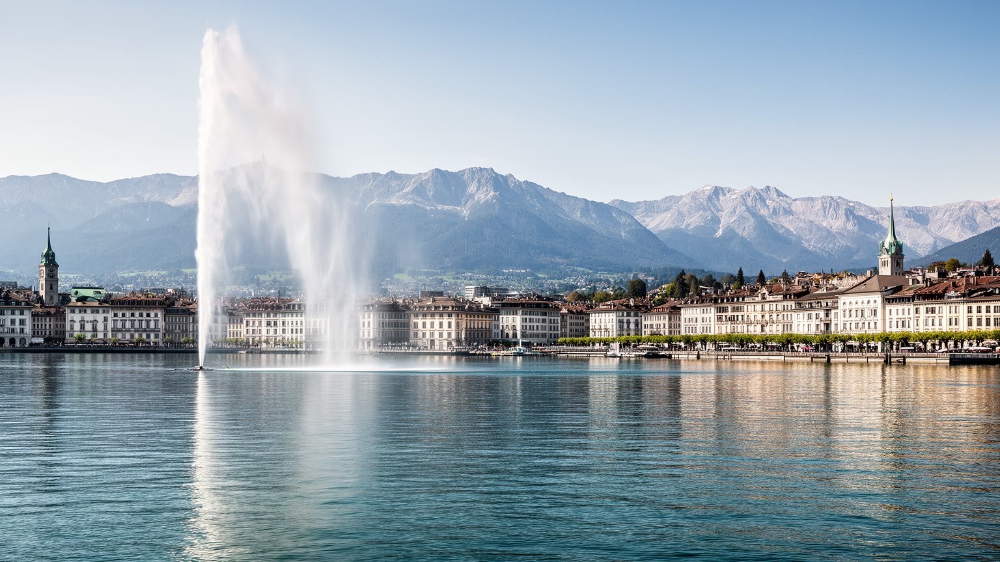
🇨🇭 スイス / ヨーロッパ / World City Atlas
レマン湖畔に国連機関、赤十字、時計産業、金融、CERNへ向かう科学圏、越境労働が重なる都市です。中立外交の舞台でありながら、住宅費、国境通勤、人道主義の限界も読む都市です。
都市の骨格
ジュネーブはレマン湖からローヌ川が流れ出す地点にあり、フランス国境へ数分で届きます。旧市街、湖畔、国際機関地区、空港、越境鉄道が近く、都市規模より大きな政治と労働の圏域を動かします。
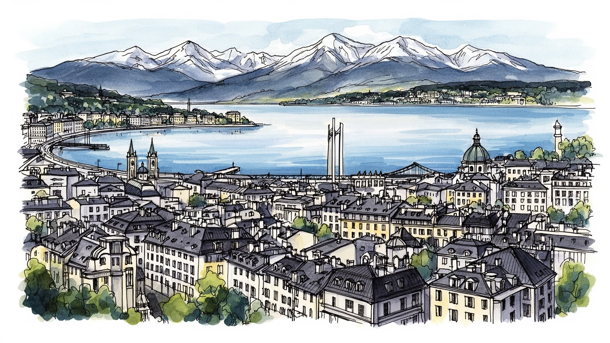
ジュネーブは国連欧州本部、赤十字、各国代表部が集まる交渉都市です。スイス中立の信用、空港、会議場、国境管理が一体となり、人道、軍縮、難民、保健の議題が街路に集まります。緊張も日常の奥に深く残ります。
国際機関、プライベートバンキング、商品取引、時計、法律、医療研究、CERN周辺の科学圏が厚い雇用を作ります。一方でホテル、清掃、介護、建設、小売を担う人はフランス側から通い、住居費の差が生活まで分けます。
宗教改革の記憶を持つ旧市街、カトリック、プロテスタント、ユダヤ教、イスラム教、正教会、各国ディアスポラが共存します。博物館、音楽祭、国際学校、外交官家庭の生活が、市場や湖畔の日常生活にも混ざります。
大噴水、旧市街、国連地区、赤十字博物館、湖畔散歩は歩きやすい距離にあります。住民には高い家賃、住宅不足、越境通勤の混雑、物価、保育、老後の費用が重く、観光地の美しさの裏にも日常の圧力が強くあります。
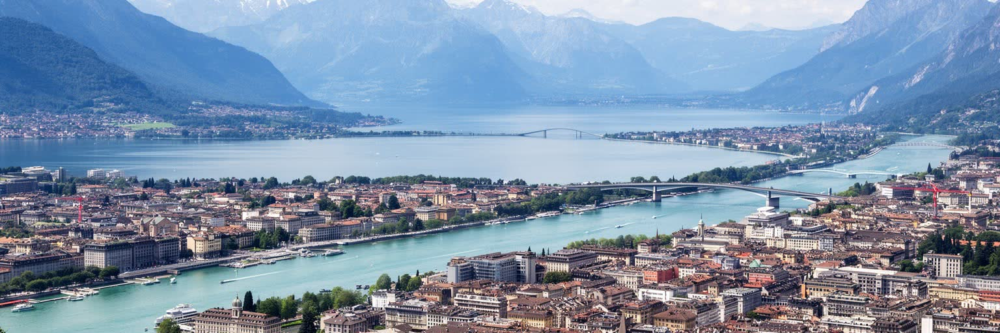
ジュネーブの地理は、都市の小ささと影響力の大きさを同時に説明します。市の中心はレマン湖の南西端、ローヌ川が流れ出す場所にあり、旧市街、湖畔の公園、銀行街、国際機関地区、空港が短い距離で連なります。自治体の面積は小さいため、日常の都市圏はすぐカントン全体、さらにヴォー州ニヨン地区とフランス側のアン県、オートサヴォワ県へ広がります。朝の道路とレマン・エクスプレスには、国境を越えて働く人が集まり、スイス側の高賃金とフランス側の住宅地が一つの生活圏を作ります。湖は景観資源である前に、都市の気候、観光、富裕層住宅、公共空間を左右する基盤です。水辺の美しさだけを見ると、背後にある国境通勤、土地不足、交通投資の重さを見落とします。ジュネーブを読む入口は、湖、川、山、国境を一枚の地図として見ることです。国際空港が中心から近いことも重要です。外交官、会議参加者、金融関係者、研究者、観光客が短時間で街へ入り、ホテル、警備、通訳、交通が国際機能を支えます。都市の密度は高く、湖岸や旧市街に余白は限られています。そのため新しい住宅や研究施設は郊外、国境沿い、フランス側へ圧力をかけます。ジュネーブの都市形態は、境界線で終わるのではなく、境界線を毎日通過する人の移動によって成り立っています。周辺のブドウ畑や山並みは絵葉書の背景であると同時に、開発をどこまで許すかという政治的な境界でもあります。湖に向かう視線と国境へ向かう通勤を同時に見ると、この都市の緊張がよく分かります。
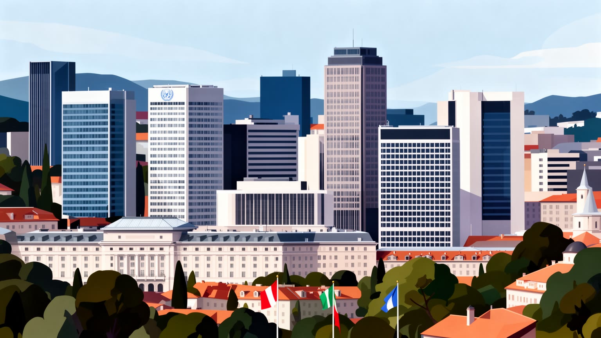
ジュネーブの外交地区は、世界政治を首都の記念碑ではなく実務の集積として見せます。パレ・デ・ナシオン周辺には国連欧州本部、専門機関、各国代表部、NGO、会議場、報道、通訳、法律事務所、ホテルが集まり、保健、労働、難民、軍縮、通信、知的財産、人権をめぐる交渉が続きます。ニューヨークの国連本部が総会と安全保障理事会の象徴であるなら、ジュネーブは長い委員会、専門家会合、条約実施、非公式協議が都市の日常に染み込む場所です。各国の代表団は湖畔の静かな景観の中で対立し、妥協し、時に合意文の一語をめぐって深夜まで調整します。中立国スイスの制度的信用は、この実務を支える土台ですが、中立は無色透明な立場ではありません。戦争、制裁、難民、感染症、企業責任をめぐる議題では、誰を招き、誰の声を聞き、どの言葉で文書化するかが政治になります。外交地区を歩くと、警備柵、旗、会議参加者、抗議の横断幕、昼食を取る職員が同じ歩道に見えます。国際都市としてのジュネーブは壮大な首都ではなく、交渉を続けるための作業空間です。その地味な持続性が、都市の重みを作っています。会議の成果はすぐ見えないことも多いものの、通訳者、運転手、警備員、事務職員、専門家が同じ予定表を支えることで、世界の危機は少なくとも話し合える形へ置き換えられます。都市の静けさは、対立の不在ではなく、対立を手続きに変えるための環境です。
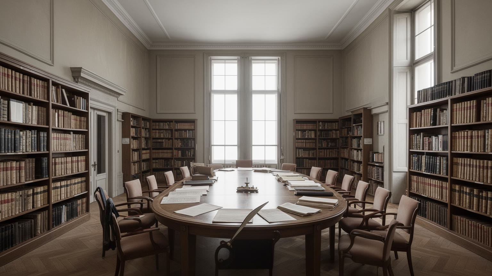
ジュネーブは人道主義の都市として記憶されています。赤十字国際委員会、ジュネーブ諸条約、人道法、難民支援、災害救援の名前は、この都市に特別な道徳的権威を与えてきました。しかし人道の都市を読むには、善意の象徴だけでは足りません。人道支援は、戦争、植民地支配、国家暴力、国境管理、寄付、メディア、専門職の雇用と結びつきます。博物館で語られる救援の歴史の背後には、現場で危険を負うスタッフ、資金をめぐる交渉、支援を受ける人の声があり、都市の会議室だけで問題は解決しません。ジュネーブは多くの紛争当事者が同じ場に来るため、対話の余地を作りますが、その余地はしばしば不完全です。人道という言葉は政治を超えるように聞こえますが、実際には捕虜、民間人、病院、避難路、制裁、国境の扱いをめぐる激しい政治そのものです。都市の静かな湖畔と会議場は、遠い戦場や避難民キャンプと切り離されていません。ジュネーブの価値は、苦しみを完全に止められることではなく、国家間の対立がある中でも最低限のルールと対話を維持しようとする点にあります。その限界を含めて見ることで、人道都市の現実が立体的に見えます。赤十字の標章や条約名は強い象徴ですが、実際の人道は物資の搬入許可、拘束者への面会、病院の保護、安否確認のような細かな実務に宿ります。ジュネーブはその実務を忘れさせない記憶の保管庫でもあります。
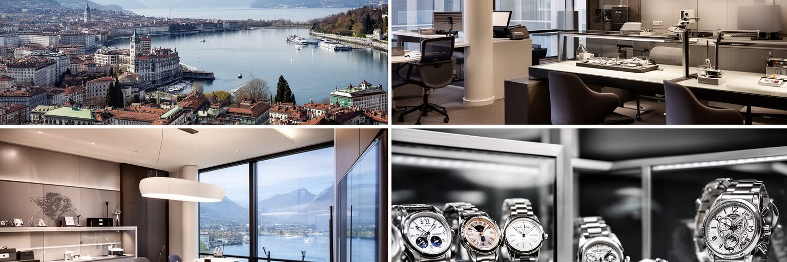
ジュネーブの経済は国際機関だけでなく、時計、金融、商品取引、法律、富裕層サービスに支えられています。旧市街と湖畔の周辺にはプライベートバンキングや法律事務所が集まり、スイスの守秘性、政治的安定、複数言語の人材が世界の資産管理を引き寄せてきました。時計産業はジュラ山脈や周辺地域の技能と結びつき、精密加工、宝飾、ブランド、見本市、観光消費を通じて都市のイメージを作ります。高級時計のショーウィンドーは美しいですが、その背後には職人、デザイナー、販売員、物流、国際顧客対応、知的財産の管理があります。商品取引会社や金融機関は世界の資源、食料、海運、為替とつながり、ジュネーブを小さな都市以上の経済中枢にしています。同時に、富を扱う都市には税制、透明性、制裁、資金洗浄、格差をめぐる批判もつきまといます。湖畔の豊かさは、公共サービスや文化施設を支える一方で、住宅価格と生活費を押し上げ、普通の働き手を中心から遠ざけます。ジュネーブの金融と時計を読むことは、華やかな消費ではなく、信用、秘密、技能、規制、労働がどのように都市の階層を作るかを見ることです。高付加価値産業の成功は、都市を豊かにすると同時に、住める人を選別する力にもなります。銀行や時計店の静かな表情は、世界の不安や富の移動を受け止める窓口でもあります。だから経済の強さは、透明性と生活の公平さを保てるかで評価される必要があります。
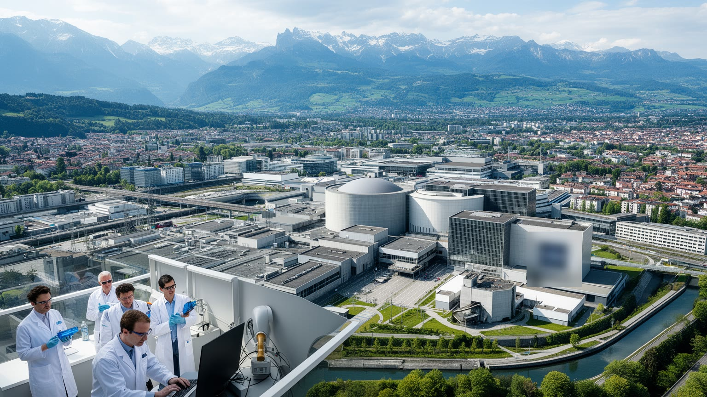
ジュネーブの国際性は外交だけではありません。市の北西、スイスとフランスの国境をまたぐ地域にはCERNがあり、素粒子物理学、加速器技術、計算、国際共同研究の巨大なネットワークが広がります。研究施設は観光名所のように街の中心へ見えるわけではありませんが、大学、技術企業、データ処理、人材移動、教育、科学コミュニケーションを通じて都市の性格を変えています。研究者、技術者、博士課程の学生、短期滞在の専門家は、国籍や雇用形態を越えて地域に住み、英語、フランス語、ドイツ語、イタリア語、各国語が研究室と住宅地で交じります。CERNは基礎科学の象徴であると同時に、国境を越える行政、ビザ、住居、学校、交通の課題を日常化します。科学は抽象的な知識だけでなく、実験設備を動かす電力、精密機器、冷却、保守、セキュリティ、食堂、バス路線に支えられます。ジュネーブを科学都市として読むと、外交の会議室とは別の形で、国家を越えた協力の実験が見えます。ここで重要なのは、科学が政治から完全に自由ということではなく、競争する国家が共通の施設を維持するために、予算、ルール、安全、知識共有を調整し続けている点です。見えにくい研究圏は、都市のもう一つの国際機関地区です。若い研究者の滞在は短いことも多く、住宅、保育、交通、配偶者の仕事探しが研究生活を左右します。巨大な実験装置は、周辺の小さな日常の支えなしには動きません。
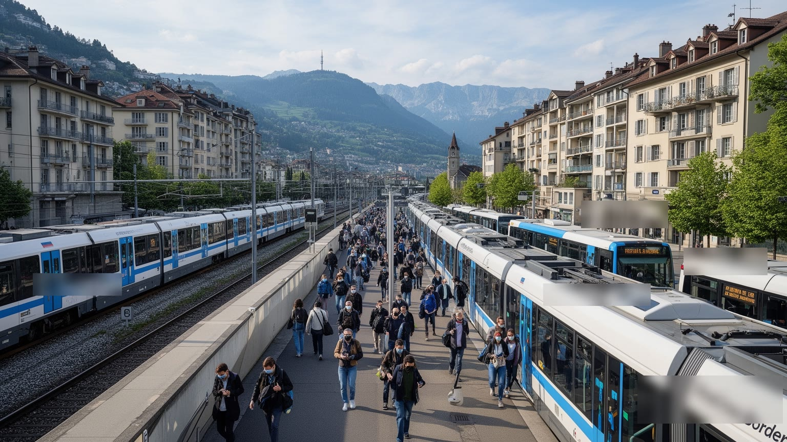
ジュネーブの日常は、国境を越える労働なしには動きません。多くの人がフランス側やヴォー州から通い、病院、ホテル、レストラン、小売、建設、清掃、介護、金融事務、国際機関の契約職まで幅広い仕事を担います。スイス側の賃金は高い一方、住宅費も非常に高く、フランス側に住むことは生活戦略であると同時に、長い通勤と国境交通の負担を伴います。レマン・エクスプレスやトラム延伸は、都市圏を一つに近づけましたが、道路渋滞、駐車、税収配分、公共サービス利用、学校、医療、環境負荷をめぐる摩擦は残ります。国境は地図上の線であるだけでなく、給与、物価、社会保険、住宅市場、政治参加を分ける制度です。ジュネーブで働く人が、必ずしもジュネーブの政治に参加できるわけではありません。中心部の豊かなサービスは、周辺から来る人の移動時間と生活費の計算に支えられています。都市の国際性は外交官だけでなく、毎朝国境を越える看護師、販売員、調理人、技術者にも宿ります。越境労働を見ることで、ジュネーブの繁栄が一つの自治体ではなく、複数の行政圏が分担する生活圏の上にあることが分かります。高賃金都市の成功は、住宅と交通を広域で調整できるかにかかっています。通勤の混雑は個人の不便に見えますが、実際には雇用、税、住宅供給、環境政策が噛み合っていないことの表れです。国境を越える人の時間を尊重できるかが、都市圏の成熟を決めます。
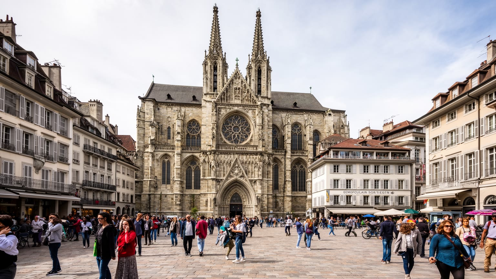
ジュネーブ旧市街は、国際機関地区とは違う時間の厚みを持ちます。サン・ピエール大聖堂、石畳の坂道、広場、大学、宗教改革の記念碑は、カルヴァンの都市としての記憶を今に伝えます。宗教改革は神学上の出来事にとどまらず、教育、印刷、移住、商業倫理、自治、亡命者の受け入れを通じて都市の性格を形作りました。プロテスタントの記憶はジュネーブの市民意識と国際人道主義にも影を落としますが、現代の都市はそれだけで説明できません。カトリック、ユダヤ教、イスラム教、正教会、各国の教会、移民コミュニティ、世俗的な国際職員が共に暮らし、信仰は建築だけでなく学校、食、葬送、祝祭、慈善活動の中にあります。旧市街の観光客は歴史を眺めますが、住民にとっては日常の市場、カフェ、学校、役所、坂道でもあります。保存された景観は美しい一方、家賃と商業化で地元の生活が薄くなる危険もあります。ジュネーブの文化を読むには、宗教改革を誇る単線的な歴史ではなく、亡命者、商人、職人、外交官、移民、学生が重ねてきた複数の記憶を見る必要があります。小さな旧市街は、世界へ開いた都市がどのように自分の道徳的物語を作ってきたかを示す場所です。宗教的な寛容を掲げる都市であっても、実際の共存は礼拝場所、学校給食、墓地、祝日の扱いといった細かな調整で成り立ちます。歴史の石畳は、現在の多文化生活を支える舞台でもあります。
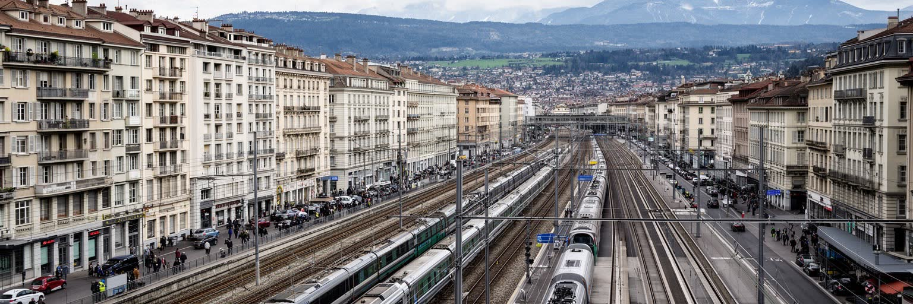
ジュネーブの暮らしを語るとき、住宅費と物価を避けることはできません。高収入の金融、国際機関、専門職が集まる都市では、中心部の住まいは限られ、家賃は高く、空室を探すだけでも大きな負担になります。湖畔や旧市街の近くに住める人、郊外やフランス側から通う人、補助付き住宅を待つ人では、同じ都市の使い方が大きく違います。物価の高さは、食料、外食、保育、医療保険、交通、余暇に影響し、若い世帯、単身者、移民労働者、非正規の国際機関職員には重くのしかかります。都市は安全で清潔で公共サービスも厚い一方、その質を支える費用が生活の選別を生みます。高齢者は住み慣れた地区に残れるかを心配し、子育て世帯は部屋数、学校、保育、通勤のバランスを迫られます。住宅不足は単なる市場問題ではなく、外交都市、金融都市、越境都市としての構造から生まれています。周辺自治体とフランス側へ住宅圧力が広がるほど、通勤の環境負荷と地域間の不満も増えます。ジュネーブの豊かさを評価するには、平均所得やGDPだけでなく、都市を支える人が住み続けられるかを見なければなりません。湖畔の穏やかな景観の裏で、住まいの確保は最も切実な政治問題になっています。高い生活費は文化参加にも影響し、外食、音楽、スポーツ、子どもの習い事を選べる人を限ります。生活の質は、収入の高さだけでなく、都市に残る余白の広さで決まります。
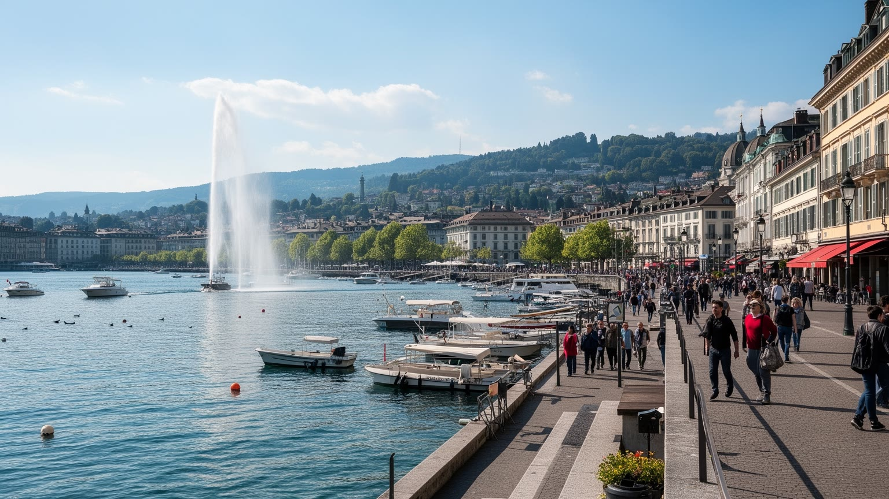
ジュネーブ観光の魅力は、短い距離で都市の複数の顔を歩けることにあります。湖畔では大噴水、遊覧船、公園、高級ホテルが都市の第一印象を作り、旧市街では大聖堂、坂道、広場、美術館、カフェが歴史を見せます。北側へ進むと国連地区、赤十字博物館、各国代表部があり、観光客は平和と人道の象徴を訪ねます。さらに市場、チョコレート、時計店、湖水浴、近郊のワイン産地、アルプス方面への日帰り旅行が、都市滞在を広げます。ただし観光は美しい消費だけではありません。ホテル、交通、警備、清掃、飲食、通訳、展示案内で働く人がいて、国際会議の時期には宿泊価格や混雑が変わります。湖畔の公共空間は住民の休息の場でもあり、観光客と住民が同じベンチ、同じ遊歩道、同じトラムを使います。観光都市としての成功は、訪問者に分かりやすい象徴を見せるだけでなく、地元の生活が湖から追い出されないことでも測られます。ジュネーブを訪れるなら、写真に収まりやすい大噴水だけでなく、朝の市場、夕方の通勤、国連前の抗議、住宅地の坂、湖畔で昼食を取る職員まで見るとよいでしょう。観光と日常が重なる距離の近さが、この都市の読みどころです。加えて、観光客が多い地区では土産物店や高級店が増え、住民向けの小さな店が減ることもあります。湖畔を共有する作法が、都市の品位を支えています。
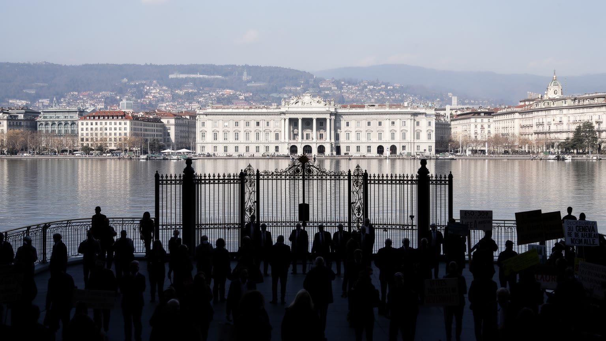
ジュネーブは中立外交の象徴ですが、中立は単純な美徳ではありません。紛争当事者が同じ都市に来られること、対話の余地を残すこと、専門機関が政治対立を越えて実務を進めることは大きな強みです。一方で、中立の場は時に加害責任、制裁、企業活動、人権侵害、難民受け入れをめぐる判断を曖昧に見せることもあります。誰に発言権があり、誰が会議場の外に置かれるのか。どの紛争が注目され、どの危機が予算不足になるのか。人道都市は常にそうした不均衡と向き合います。ジュネーブの国際機関は、法と手続きの力を信じる場所ですが、現場の暴力を即座に止められるわけではありません。だからこそ、都市の役割は過大評価も過小評価もできません。合意が小さくても、捕虜、ワクチン、避難路、労働基準、通信規格、難民認定のような具体的な実務は人の生活を左右します。中立の限界を認めることは、ジュネーブの価値を否定することではなく、対話の場を維持する困難さを理解することです。湖畔の穏やかな景観の中で、世界の対立は消えるのではなく、手続きと言葉へ翻訳されます。その翻訳が遅く不完全であっても、暴力の外側に残る数少ない通路として都市は機能しています。沈黙が交渉の条件になる時もあれば、沈黙が被害者の不信を深める時もあります。ジュネーブの難しさは、その二つを同じ都市で抱え続ける点にあります。